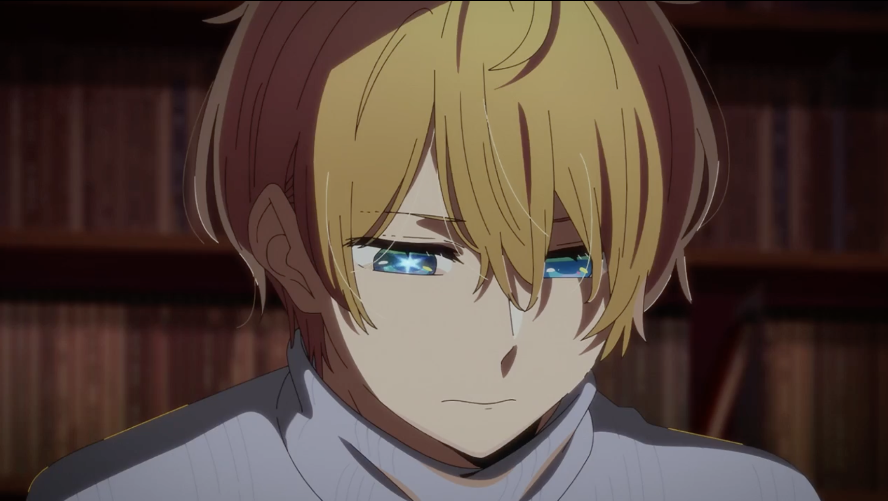

在上周末看完《推子》的第一话之后，
我已经循环播放「アイドル」超过 223 遍了。
我相信我的包月 Apple Music 应该不是这么用的（捂脸）
但是，有一件重要的事情。
我似乎从没有这么「喜欢」过一部作品。
我其实是清楚的，这部作品并没有那么优秀。
这会让我很容易对作品失望，然后让我越来越不敢看番。
这不好。
简单看了看东瀛啁啾。
不出我所料，在第 2 集放送之后评价已经出现了下滑，就和《紫罗兰永恒花园》当时的情况一样。
即使在第一集中使用了一些增进观感和冲突的小手段，这些使用特别的手法渲染的气氛和热忱会很容易在日常的无趣中消散。
而我知道这部作品和《京紫》一样，日常占据了主线的发展契机，剧情后期缺少核心的爆点。情绪就像一条沉在水底的暗线，始终蓄势待发但始终浮不起来。
赤坂缺少撰写长篇脚本的能力。
这部作品会成为一部「优秀的作品」，但很难称之为「佳作」。
但是我依旧有着莫名的冲动。
这冲动又是从何处来的呢？我不知道。
回到第 2 话本身。
作为衔接前后的过度集数，作画和分镜的质量有着 肉眼可见的下滑。
这里的「下滑」并不是贬义，集英社头牌 怎么可能缺经费？（bushi）
只是随着回到正常的叙述轨道，为了观感的平和以及制作的节奏，不可能继续延续和第一集一样的「堆料」。而且由于剧情也回到了常见的日常系节奏，观感逐渐乏善可陈，第一集的用力过猛暴露无遗，评价回归也是正常现象。
是平平无奇但是看得很舒服的过渡一话。
我很喜欢 ED 的插入处理，能看出监督想渲染搞笑气氛的尝试，虽然没成功。
不过，第 2 话出现的没成功的搞笑尝试实在是太多了吧！但是我无法指摘监督，这一话基本是对原作漫画分镜的「忠实再现」。
赤坂明全责。
（啊不是我能吐槽一下为什么一个主旨是「爱」与「欺骗」的「转生复仇流作品」却在努力逗哏啊！为什么啊！）
然后，我要着重称赞 OP 和 ED。
被 OP 糊脸的我实在无法压制自己的兴奋，跑到啁啾发了句感想：
Damn who drew this OP storyboard?
so fxxking awesome.
惊艳的分镜剪辑，我无需多言。 欣赏原片比我能说的更多。

看完 ED 的我想问一句：
「星野アクア、君の破壁人は誰だ？」（笑）
主不在乎。（笑的更大声了）
【主已全款预定初回限定盘】
相比于第一集的亮眼 （惊吓），后面将会回到正常的叙述轨道。
他们的故事还将继续，我也会继续守望下去。
赤坂老师给点力吧（叹气）